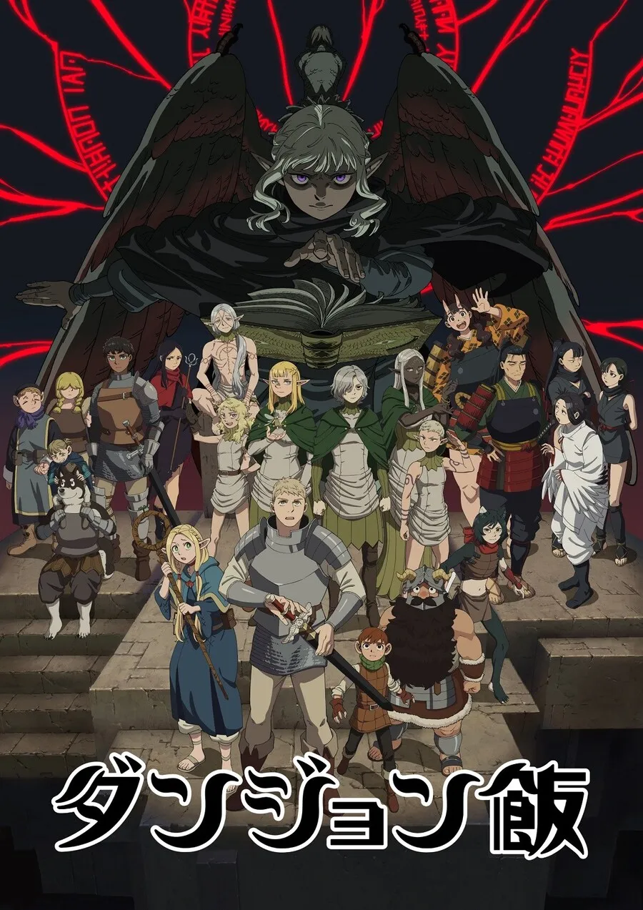

'용사 힘멜 일행과 함께 10년에 걸친 모험 끝에 마왕을 물리치고
세계에 평화를 가져온 마법사 프리렌.
천 년을 넘게 사는 엘프인 그녀는 힘멜 일행과 재회를 약속하고 혼자 여행을 떠난다.
그로부터 50년 후 프리렌은 힘멜을 찾아갔지만
50년 전과 달라진 게 없는 그녀에 비해 힘멜은 늙었고 수명이 얼마 남아있지 않았다.
그 후 죽음을 맞이한 힘멜을 보고 지금까지 '인간을 아는' 일을 하지 않았던 것을 후회하고
자신을 반성한 프리렌은 '인간을 알기 위한' 여행을 떠난다.
그 여로에는 다양한 사람들과의 만남, 다양한 사건들이 기다리고 있었는데──.
'
PV
주술회전
다크 판타지, 능력자 배틀
×
주술회전
원작:아쿠타미 게게
제작사:교토 애니메이션
감독:고쇼조노 쇼타
시리즈 구성:세코 히로시
스트리밍:라프텔,넷플릭스
편당 러닝타임:24분
화수:23화
시청 등급:15세
줄거리
'소년은 싸운다, '올바른 죽음'을 위해.
쓰라린 고통, 후회, 치욕.
인간으로부터 흘러나온 부정적인 감정이 저주로 변해 일상에 숨어든다.
저주는 세상에 만연한 재앙의 근원이며, 최악의 경우 인간을 죽음으로 이끈다.
그리고 저주는 저주로밖에 없앨 수 없다.
경이적인 신체능력을 가진 소년 이타도리 유지는 아주 평범한 고등학생이었지만,
어느 날 '저주'에 습격당한 친구를 구하기 위해 특급 주물 '양면 스쿠나의 손가락'을 먹고 영혼에 저주가 깃들게 된다.
저주인 '양면 스쿠나'와 몸을 공유하게 된 이타도리는 최강의 주술사인 고죠 사토루의 안내로
저주에 대항하는 전문 기관인 '도쿄 도립 주술 고등전문학교'에 편입하게 되는데......
저주를 없애기 위해 저주가 된 소년의 돌이킬 수 없는
장렬한 이야기가 움직이기 시작한다....'
PV

던전밥
쿠킹 판타지, 던전
×
ㅈ
던전밥
원작:쿠이 료코
제작사:트리거
감독:미야지마 요시히로
시리즈 구성:우에노 키미코
스트리밍:넷플릭스
편당 러닝타임:24~28분
화수:24화 (예정)
시청 등급:15세
줄거리
'던전밥.
'먹을 것'이냐, 아니면 '먹힐 것'이냐...
던전 깊은 곳, 레드 드래곤에게 먹힌 여동생을 두고 간신히 지상으로 생환한 모험가 라이오스.
다시 던전으로 들어가려 하지만, 돈도 식량도 모두 미궁 아래에 두고 나왔다.
당장이라도 동생이 소화될지 모르는 상황이기에, 라이오스는 결단을 내린다.
"식량은 던전 안에서 자급자족하자!"
그것은 다시 말해, 슬라임, 바질리스크, 미믹 심지어 드래곤까지도 먹겠다는 뜻이다!
가라, 모험자여, 그대의 앞을 가로막는 것은 다 먹어 치우며 던전을 돌파해라!'